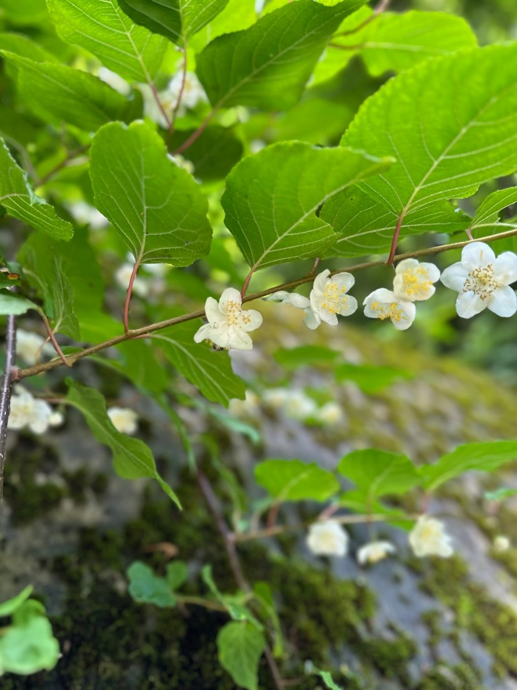
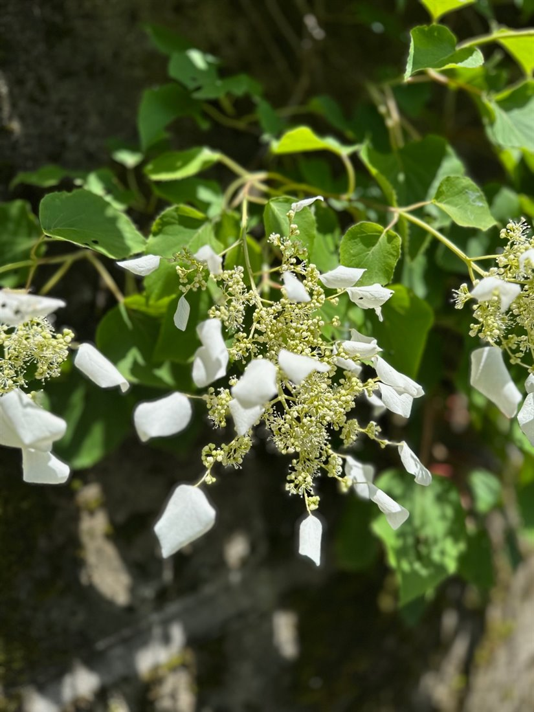

まぎらわしい3組
森のなかで実際に迷うのは、だいたい決まった組み合わせです。南昌山で効くのはこの3つ。
見分けの決め手
- コナラ と ミズナラ
- 葉柄を見る。どちらも丸い切れ込みのある倒卵形ですが、コナラには葉柄がはっきりあり、ミズナラはほとんど柄がなく枝から直接生えているように見えます。迷ったら葉の付け根をつまんでください。南昌山では、標高が上がるにつれて主役がコナラからミズナラへ移ります。
- アブラチャン と オオバクロモジ
- 大きさと厚みを見る。どちらもクスノキ科で全縁、どちらも枝を折ると香ります。だから「香るほう」では決まりません。オオバクロモジのほうが葉が大きく、厚く、濃い緑。アブラチャンはひとまわり小さく、薄く、葉先がすっと長い。林道沿いに群れていればアブラチャン、林の中に静かに立っていればオオバクロモジのことが多い、という土地勘も効きます。
- ミズキ と ヤマボウシ
- 葉のつき方を見る。どちらも全縁で、ふちに沿った弓状脈が美しい。ですがミズキは互生、ヤマボウシは対生です。葉脈がそっくりなぶん、枝を見ればあっさり決着します。
カエデだけで、8種
60種を家族（科）で並べ替えると、見えてくるものがあります。いちばん多いのはカエデの仲間で、イタヤカエデ、コミネカエデ、ミツデカエデ、ウリハダカエデ、ハウチワカエデ、コハウチワカエデ、ヤマモミジ、オオモミジの8種。60種のうち8種がカエデでした。
カエデは全部が対生で、多くが掌状。だから「対生・掌状」まで来たら、ほぼカエデだと決めてしまって構いません。そこから先は、裂片の数、ふちの鋸歯の細かさ、葉柄の長さで分けていきます。
- ハウチワカエデ／コハウチワカエデ｜団扇のように丸く、9〜11裂。コハウチワは名前のとおりひとまわり小さい。
- ヤマモミジ／オオモミジ｜切れ込みが深く、いわゆる「モミジ」の形。
- イタヤカエデ｜ふちに鋸歯がなく、つるりとしている。これが決め手。
- ウリハダカエデ｜葉より樹皮。緑地に黒い縦じまが入り、マクワウリの肌に似ているのが名前の由来です。
- ミツデカエデ｜ひとりだけ複葉。小葉3枚の三出複葉で、ぱっと見はカエデに見えません。
次に多いのがカバノキ科5種（ヤマハンノキ、ウダイカンバ、アカシデ、サワシバ、ハシバミ）、そしてブナ科4種（ブナ、ミズナラ、コナラ、クリ）。ブナ科はドングリの仲間で、クリもここに入ります。カバノキ科は実のかたちがそれぞれ個性的で、小さな松かさのようなヤマハンノキ、垂れ下がる穂のアカシデやサワシバ、総苞に包まれた堅果のハシバミ、と秋には葉より実のほうが分かりやすいくらいです。
代表11種、見分けのポイント
当日とくに数が多かった種、この地域の性格を示す種が11種あります。前編で見た標高の話と重ねながら整理します。
- アブラチャン細めの楕円形で全縁、葉先がすっと伸びる。クスノキ科なので折ると香る。読みどころ：林道沿いに標高500m付近までとにかく多い。自然の分布というより、道をつくって明るくなった林縁を上手に使っている姿と読めます。
- コウゾ卵形で粗い鋸歯。株によっては大きく裂け、同じ木でも葉の形がばらつく。葉面がざらつく。読みどころ：この地域では珍しい木。紙の原料にした歴史があるので、見つけた場所の記録に値します。
- ヤマハンノキ広い楕円形に鋭い鋸歯、まっすぐな側脈が筋のように目立つ。小さな松かさ状の実が残っていれば一発。読みどころ：600m付近まで多いのが南昌山らしさ。列をつくって並んでいたら、治山で植えられた可能性を疑ってみてください。
- コナラ倒卵形、丸みのある浅い鋸歯、葉柄がはっきりある。読みどころ：山麓から中腹まで普遍的。クリ、アカシデ、リョウブと一緒に出てきたら、そこは薪炭林の名残と考えてよさそうです。
- オヒョウ先端が3つ（ときにもっと）に裂け、基部が左右でずれる。粗い鋸歯と、強く出る葉脈。読みどころ：標高400m付近という低さがこの山の謎。サワグルミ、カツラ、トチノキが近くにいるかどうかを合わせて見ます。
- オオバクロモジ長楕円形で全縁、葉先が細く伸び、厚みがある。折ると甘く香る。読みどころ：広い標高で普遍的に多い。アブラチャンと入れ替わる場所が、里の森から山の森への切り替わり点です。
- サワグルミ奇数羽状複葉。細長い小葉が多数並び、オニグルミより全体に繊細。読みどころ：標高ではなく沢で決まる木。これが出てきたら「いま沢筋を歩いている」という合図です。
- ブナ楕円形、ふちは波打つだけで鋭い歯はない。側脈が規則正しく平行に走り、ふちの波のくぼみへ入る。薄くてやわらかい。成木の樹皮は灰白色でなめらか。読みどころ：350m付近から混じりはじめる。南昌山の性格を決めている木です。
- ミズナラコナラより大きい倒卵形。丸く深い切れ込み。葉柄がほとんどない。基部が耳のように張り出すことも。読みどころ：400m付近から増える。コナラとの比率が入れ替わる高さを探してみてください。
- ウダイカンバ三角形に近い卵形で先がとがり、細かい重鋸歯。基部はやや心形。樹皮は薄くはがれる。読みどころ：550m付近から増える。倒木跡や小崩壊地など、明るく開いた場所に入りやすい木なので、多い場所は森が更新した跡かもしれません。
- ヤマボウシ対生、全縁、弓状脈。初夏には白い総苞片が、秋には赤い集合果が目印。読みどころ：600m付近に多い。ブナ・ミズナラの冷たい森に、ひとつ温かい側の要素が混ざっている印です。
葉っぱの外にある手がかり
葉だけで決めようとすると苦しくなります。この日いちばん盛り上がったのも、じつは葉以外の話でした。

花の時期にだけ葉の先が白くなる、マタタビ。白い葉のかげに花が隠れています。
マタタビの白化。この日の60種目です。花の咲くころ、葉の先半分がペンキを塗ったように白くなります。花は葉のかげで下を向いて咲くので、そのままでは目立ちません。白い葉は、虫に場所を知らせる看板の役目をしているといわれます。遠目に林縁が白く光っていたら、たいていマタタビです。

イワガラミ。花びらのように見える白い一枚は、じつは萼片です。
イワガラミの装飾花。岩や木を這い上がるつる植物で、花の外側に白い大きな「花びら」がつきます。これは花弁ではなく萼片で、イワガラミは1枚、よく似たツルアジサイは3〜4枚。数えるだけで決着がつく、気持ちのいい見分けです。
ほかにも、クロモジ類は折ると香る、ブナの樹皮は灰白色でなめらか、ウリハダカエデは緑に黒い縦じま、ヤマハンノキは小さな松かさ。葉が高すぎて届かないときほど、こういう手がかりが効いてきます。
60種、歩いた順に
当日の記録を、出会った順に並べておきます。太字は、個体数や分布で南昌山の性格を示した11種です。上から下へ読むと、森がだんだん冷たくなっていくのが分かります。
※ 36番のマタタビは、後日、写真を見返して加えた1種です。同じマタタビ科のサルナシの次に置いていますが、実際に出会った順番の記録は残していません。
- アブラチャン
- ヤマグワ
- ケヤキ
- イタヤカエデ
- コミネカエデ
- オニグルミ
- タラノキ
- サワシバ
- オオバボダイジュ
- ニセアカシア
- コシアブラ
- ミツデカエデ
- コウゾ
- トチノキ
- ヤマハンノキ
- ホオノキ
- クリ
- コナラ
- モミジイチゴ
- ウリハダカエデ
- ハリギリ
- オヒョウ
- オオバクロモジ
- キブシ
- サワグルミ
- アワブキ
- ブナ
- バッコヤナギ
- ウリノキ
- ニワトコ
- ミツバウツギ
- ハクウンボク
- ツリバナ
- ミズキ
- サルナシ
- マタタビ
- クサギ
- アカシデ
- エビガライチゴ
- ミズナラ
- カツラ
- ネムノキ
- リョウブ
- ハウチワカエデ
- サンショウ
- イワガラミ
- ヤマモミジ
- ミヤマガマズミ
- タニウツギ
- コハウチワカエデ
- ムラサキシキブ
- アオダモ
- オオカメノキ
- シナノキ
- オオモミジ
- ウダイカンバ
- ヤマボウシ
- ガマズミ
- マンサク
- ハシバミ
名前を覚えるのではなく、置き場所をつくる
60種という数字を見ると、気が遠くなります。でも実際にやったことは、もっと単純でした。葉を一枚つまんで、4つ質問して、引き出しに入れる。入らなければ新しい引き出しをつくる。それを一日くり返しただけです。
そして一日の終わりには、引き出しの並び順そのものが、標高の順になっていました。森を読むというのは、たぶんこういうことなのだと思います。名前は後からついてきます。